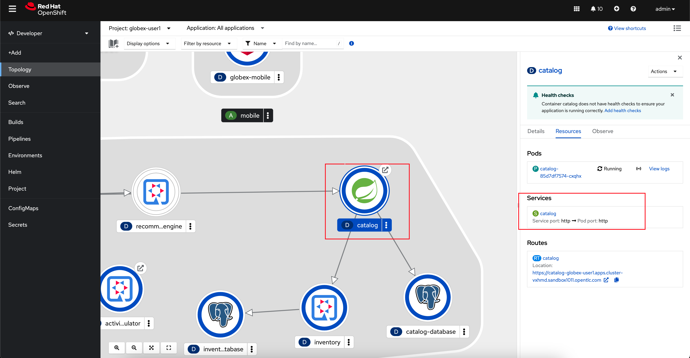
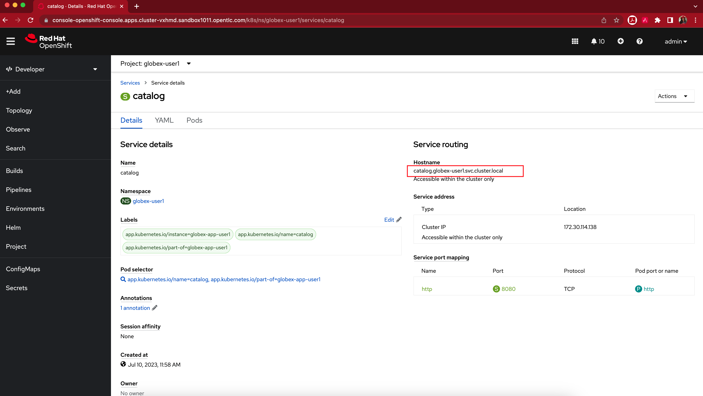

Solution Pattern: Manage and Secure APIs with an API First Approach 1. Appendix: Learn More 1.1. What are Backend, Product, ActiveDocs and CRDs? Backends are Internal APIs which are then bundled into a 3scale Product. It contains at least the URL of the API. It can optionally be configured with mapping rules, methods and metrics to facilitate reusability. Products are the Customer-facing APIs. It defines the application plans, and configure APIcast ActiveDocs are interactive documentation for your API offered as a framework by 3scale. You can create API documentation by attaching the Product Catalog OpenAPI schema as a 3scale ActiveDoc Let’s walk ts the API Server handle the entire lifecycle of the objects. 1.2. What is a OpenShift/Kubernetes Service? In OpenShift, a Kubernetes Service serves as an internal load balancer and identifies pods which in turn have the applications. If the application needs to be accessed from outside of OpenShift, you will need OpenShift routes. In this workshop, since both 3scale and the Product Catalog API run on OpenShift, 3scale will proxy requests to the backend using Services. This also means the backend cannot be accessed directly from outside OpenShift. Finding the Private endpoint of the Product Catalog service deployed on OpenShift In a browser window, navigate to the console of the lab OpenShift cluster at Topology view. Login with your username and password (user1/openshift). Open the Developer perspective in the globex-user1 namespace. Click on the catalog icon to see the deployment details appear on the right-hand. Under the Resources tab, click on catalog Service as indicated in the screenshot above.  You will be navigated to the Service Details page of the catalog service. Copy the Hostname highlighted in the screenshot below  This would look something like this: catalog.globex-user1.svc.cluster.local This hostname is used as the Private endpoint while creating the Backend. 1.3. What is APIcast? APIcast is an NGINX based API gateway used to integrate your internal and external API services with the Red Hat 3scale Platform. In this workshop we use the two built-in APICast (staging and production) that come by default with the 3scale installation. They come pre-configured and ready to use out-of-the-box.